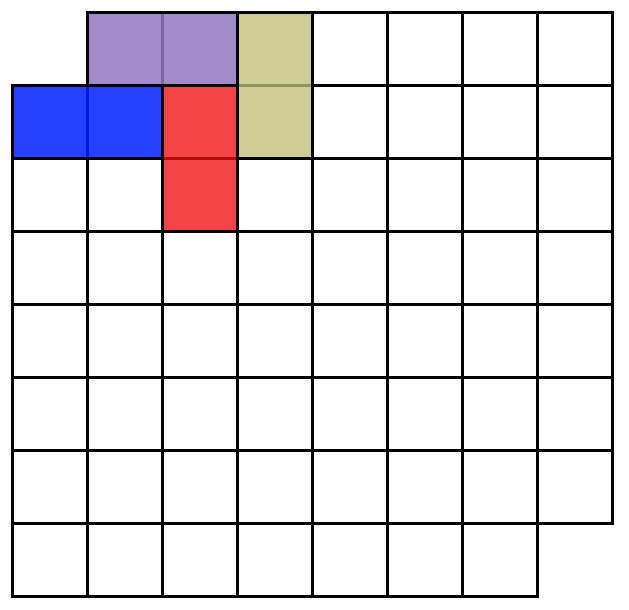
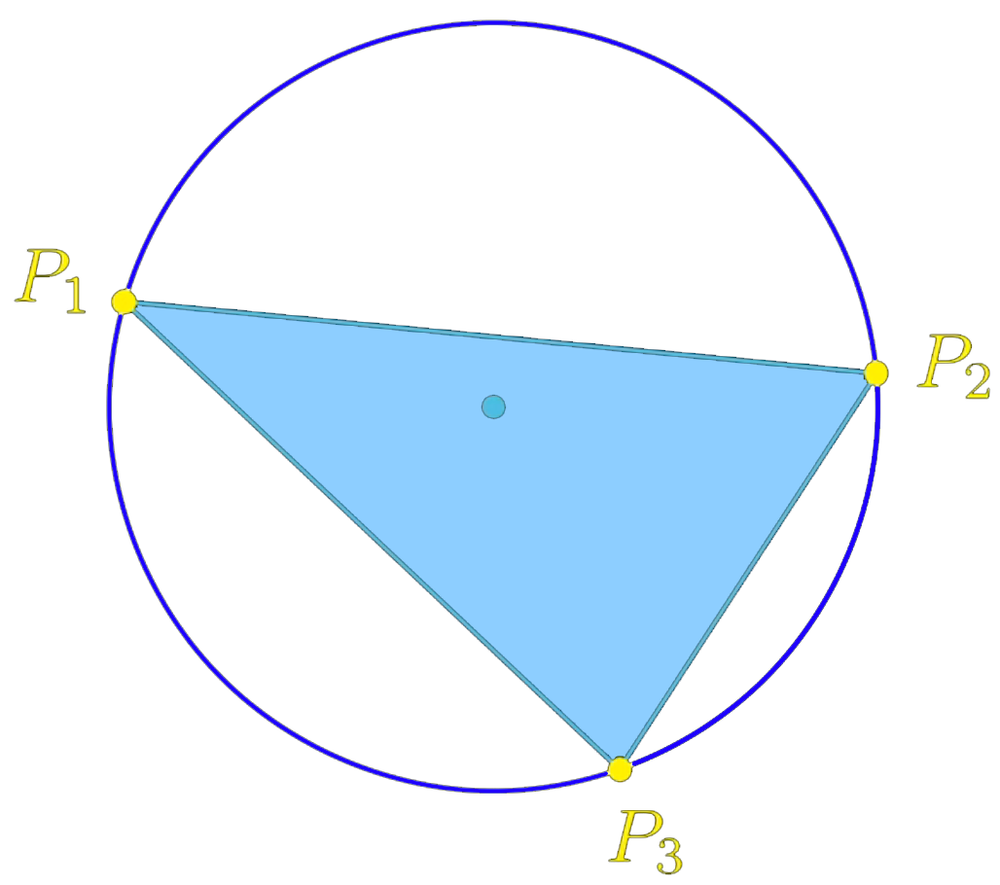

|
Math riddles
I enjoy trying to solve riddles. If you too, here is a small selection of my favourite.
Please don't hesitate to drop me an email
if you want
to share with me one of your own or
if you want to discuss about a solution.
Tiling
|
 |
Using 2x1 dominoes, is it possible to tile a 8x8 board which has its top left and bottom right pieces missing ?
|
Filling a hypercube
Is it possible to fill a 6x6x6 cube using only 4x1x1 sticks ?
The cat and the duck
A duck is enjoying a nice swim in the center of a circular pond when a hydrophobic cat appears.
The cat can move itself on land 4 times faster than the duck can in the water, but cannot swim.
Whatever the cat's strategy, is it possible for the duck to reach dry land without the cat
eating him when he reaches it ?
The boat and the rock
You are on a fishing boat in the middle of a lake. You throw a rock which you had in your pocket
in the water. Will the level of the water rise, decrease or stay the same ?
Ancient chronometer
You have a lighter as well as two ropes which burn in
an hour if you light them up. However they do not burn at the same speed and
do not burn linearly, meaning that it does not necessarily take
30 minutes for half of a rope to burn. How can you measure 45 minutes using these two ropes ?
The circle and the triangle
|
 |
Pick uniformly 3 points on a circle. What is the probability that the center of the circle
is inside the triangle formed by these 3 points ? What about in dimension 3 with 4 uniform points on the sphere ?
|
1, 2, or 3
Assume I choose a number between 1, 2, and 3. You can ask me any question to which I truthfully
answer either yes, no or I don't know. What question should you ask me in order to guess my number ?
Bali Balo
Bali et Balo sont sur un bateau. Bali tombe à l'eau, qui est chauve ?
Helicopter
A helicopter is flying horizontally at constant speed. A perfectly flexible uniform cable is suspended
beneath the helicopter; air friction on the cable is not negligible but you can neglect the wind air flow from the helicopter blades. Which of the following diagrams best shows the shape of the cable as the helicopter flies through
the air to the right?
Helicopter, follow-up question
Same question as before, but now assuming that there is a small but heavy object attached at the end of the cable.
Arithmetic frogs
Consider 100 aligned water lilies on a lake with a light bulb on each of them. We number them from 1 to 100. There are 100 frogs, each time a frog leaps on a water lily, the light bulb on it changes its state (on to off, or off to on). The first frog jumps on all the water lilies, the second jumps on all the even water lilies, the third on those which are multiples of 3 etc. until the last frog only jumps on the last water lily.
The light bulbs are initially all off. Which light bulbs are on once all frogs have passed ?
Prisoner's riddle
You and a fellow prisoner are imprisoned in a dungeon and are facing execution. The prison warden wants to give you and your cellmate a chance of freedom but doesn't want to make it too easy for you.
She has a chessboard where each square is covered by a coin — either heads or tails. Moreover it’s a special chess board with a hidden compartment in each square. A single one of these squares contains a symbolic key to the jail and freedom for you and your cell companion.
You will know which square contains the key and your fellow prisoner has to guess.
The rules are as follows:
You and your cellmate can discuss how to encode a message using the chessboard but the prison warden can hear and understand everything that you say.
Once you have decided on a system, your companion leaves the room.
You observe the prison warden hiding the key in one square and then arranging the 64 coins as heads or tails however she deems fit.
You then turn over exactly one coin on the chess board and leave the room.
Your companion re-enters the room, without having any opportunity to see or communicate with you. He observes the chessboard and the arrangement of coins and points to the square where he believes the key and freedom reside.
Rectangles
|
|
A white rectangle has been removed from a larger blue rectangle. Only using a ruler, draw a straight line that divides the blue region into two parts having equal areas.
|
Prisoners and hats
I gather a lucky group of 10 people in a room, and I give each of them a coloured hat. The colour of each hat is from a given set of 10 colours and multiple people may receive hats of the same colour. Each person can see the hat colours of all the others in the group but not their own. They are not allowed to communicate once they have their hats on. Your challenge is for them to simultaneously shout out the colour of the hat they believe they are wearing. The goal is to ensure that at least one person correctly identifies the colour of their own hat. They can work out a strategy before receiving their hats. How can they achieve this?
Dinner at the Smiths
Mr. and Mrs. Smith are hosting a party where they invite 6 couples. Mrs. Smith says, “Look, among the 13 people I have in front of me, each person knows a different number of people in the room.” How many people does Mrs. Smith know? (Everyone knows at least their spouse, and if someone knows me, I know them too.)
A bored shepher
A shepherd has 100 sheep. He decides to divide them into two groups of 50 sheep each in all possible ways. Each time he does so, he weighs the two groups and notices that the two weights are exactly the same. What can he conclude about the weight of his sheep
|